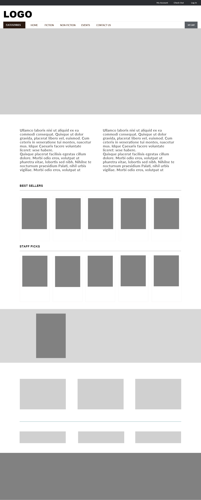

Final Project
Webflow
Creative Brief
- What is this project?
- Who is it for?
- Why are we doing it?
- What needs to be done? By whom? By when?
- Where and how will it be used?
The 10 most important things to include in a creative brief.
- Background Summary: Who is the client? What is the product or service? What are the strengths, weaknesses, opportunities and threats (or SWOTs) involved with this product or service? Are there existing research, reports and other documents that help you understand the situation?.
- Overview: What is the project? What are we designing and why? Why do we need this project? What’s the opportunity?
- Drivers: What is our goal for this project? What are we trying to achieve? What is the purpose of our work? What are our top three objectives?
- Audience: Who are we talking to? What do they think of us? Why should they care?
- Competitors: Who is the competition? What are they telling the audience that we should be telling them? SWOT analysis on them? What differentiates us from them?
- Tone: How should we be communicating? What adjectives describe the feeling or approach?
- Message: What are we saying with this piece exactly? Are the words already developed or do we need to develop them? What do we want audiences to take away?
- Visuals: Are we developing new images or picking up existing ones? If we are creating them, who/what/where are we photographing or illustrating? And why?
- Details: Any mandatory information that must be included? List of deliverables? Preconceived ideas? Format parameters? Limitations and restrictions? Timeline, schedule, budget?
- People: Who are we reporting to? Who exactly is approving this work? Who needs to be informed of our progress? By what means?
SWOT Analysis
What is SEO?
- Search engine optimization (SEO) is the process of affecting the online visibility of a website or a web page in a web search engine's unpaid results.
- The earlier (or higher ranked on the search results page), the more visitors it will receive from the search engine's users.
- Good HTML matters to search Engines.
- Having good and frequently updated content is very important.
Google Analytics

- Google Analytics is a digital analytics software.
- It analyzes and provides important information about your website's visitors.
- You can create reports about the different metrics it collects on your site.
- It helps you optimize your content based on visits and bounce rates.
- Gives you an idea of where your traffics is coming from
- Demographics of users, age, gender, location
Creative Brief Links
things to always keep in mind:
- Website Objectives
- Target Audience
- Competitors
- Call to Action
The SiteMap
The sitemap helps you visualize the structure of a website — information architecture — before you build it.

The Wireframe
Is the visual representation of the contents of your website

Mockup
Is the visual representation of the contents of your website

Design

Design